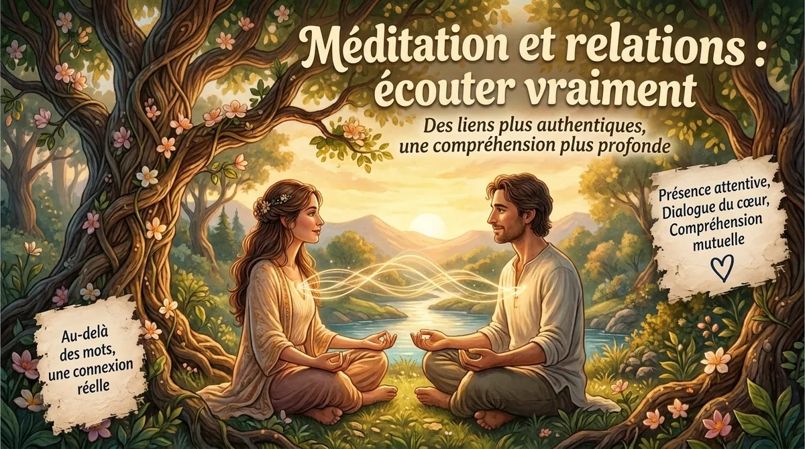
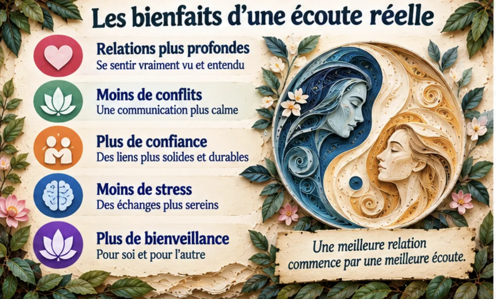
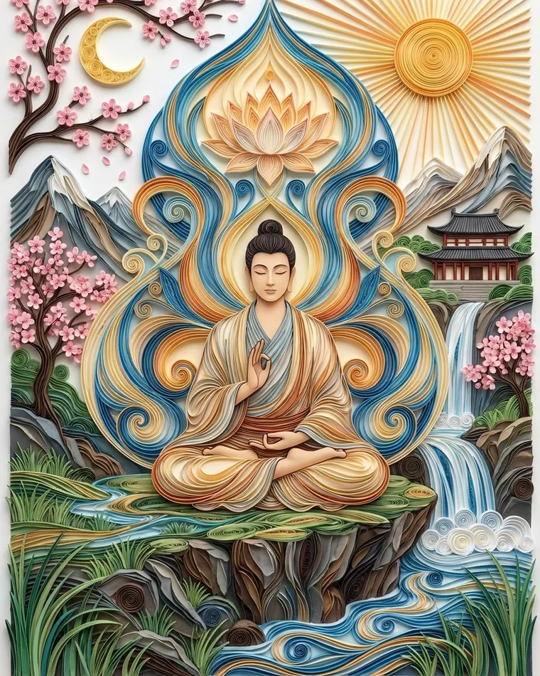

Méditation et communication dans le couple : écouter vraiment au lieu de simplement attendre son tour de parler

Communication dans le couple : être là ne veut pas dire être présent. Écoute active, conflits, limites : trois exercices pour mieux communiquer en couple.
Peut-on être avec quelqu’un sans vraiment l’écouter ?
Oui : il existe une forme très moderne d’absence, qui consiste à regarder quelqu’un dans les yeux tout en pensant à la réponse que l’on va lui donner, au message qui vient d’arriver et à ce que l’on mangera après.
Nous appelons cela « écouter ».
La communication dans le couple en est souvent la première victime.
Dans les relations proches, cette attention partielle devient rapidement visible. Un partenaire raconte une journée difficile et reçoit immédiatement une solution. Un ami exprime une peur et nous répondons avec notre propre expérience. Un enfant raconte quelque chose lentement et nous complétons sa phrase.
La méditation relationnelle ne consiste pas nécessairement à méditer ensemble. Elle commence par importer dans la conversation une compétence cultivée dans la mindfulness : remarquer ce qui se passe maintenant sans y réagir immédiatement.
Les recherches sur mindfulness et relations sont encourageantes mais encore loin de constituer une science définitive. Une méta-analyse de dix études avait trouvé une association positive modeste entre mindfulness et satisfaction relationnelle. Des travaux plus récents confirment des liens entre mindfulness individuelle, soin de soi, activités partagées et qualité du couple, notamment dans une étude longitudinale de 1 331 personnes publiée en 2024.
Mais association ne signifie pas causalité automatique.
Les personnes plus stables ou satisfaites peuvent également trouver plus facile d’être présentes et non réactives.
Une méta-analyse récente consacrée aux interventions mindfulness pour la satisfaction romantique trouve un petit effet positif, tout en jugeant la certitude globale des preuves encore très faible.
La conclusion raisonnable est donc : mindfulness et qualité relationnelle semblent liées, et certains entraînements peuvent aider, mais la méditation n’est pas un vaccin contre les disputes.
Comment écouter vraiment son partenaire sans se défendre ?
Il faut apprendre à tolérer quelques secondes sans se défendre, puis vérifier que l’on a bien compris. Imaginez que votre partenaire dise :
« J’ai eu l’impression que tu ne m’écoutais pas hier. »
Le cerveau peut produire immédiatement une défense :
« Ce n’est pas vrai, j’étais fatigué. »
« Toi non plus tu ne m’écoutes jamais. »
« J’ai pourtant fait… »
La mindfulness introduit une étape supplémentaire avant la réponse.
On remarque la contraction du ventre.
La chaleur du visage.
La phrase défensive qui se prépare.
Et, pendant quelques secondes, on ne fait rien avec.
Cette non-réactivité temporaire ne signifie pas que l’autre a forcément raison.
Elle signifie simplement que nous attendons d’avoir réellement compris avant de présenter notre version.
Une technique simple consiste à reformuler avant de répondre :
« Tu as eu l’impression que j’étais physiquement là mais pas vraiment avec toi, c’est ça ? »
Si l’autre répond non, reformulez.
C’est un exemple d’écoute active dans le couple : redire avec ses mots ce que l’on a compris, avant de donner son avis.
Cette pratique paraît presque ridiculement élémentaire. Pourtant, elle empêche une quantité impressionnante de conversations de se transformer en procès parallèle où chacun défend un dossier différent.
Une étude portant sur 183 étudiants avait trouvé que certaines dimensions de mindfulness étaient associées à l’empathie, à l’écoute active et à la capacité à reconnaître des messages de soutien plus adaptés.
Il s’agissait cependant d’une étude corrélationnelle, pas d’une preuve montrant que dix minutes de méditation transforment automatiquement quelqu’un en excellent partenaire.
Le meilleur entraînement à l’écoute reste… l’écoute.
La méditation aide surtout à repérer ce qui nous empêche de la pratiquer.

Faut-il tout accepter pour bien communiquer dans le couple ?
Il existe une caricature dangereuse de la relation consciente : le partenaire idéal serait toujours calme, compréhensif et capable d’accueillir toutes les émotions avec un sourire de Bouddha miniature.
Non.
La mindfulness inclut aussi la perception claire de ses propres limites.
On peut écouter quelqu’un avec attention et répondre :
« Je comprends que tu sois en colère, mais je ne continue pas cette conversation si tu me cries dessus. »
Être présent ne signifie pas se soumettre.
Cette distinction devient particulièrement importante dans les relations abusives. Aucun programme de méditation de couple ne doit servir à maintenir quelqu’un dans une situation de violence ou de contrôle coercitif.
Dans une relation globalement saine, en revanche, l’attention au corps peut aider à détecter l’escalade émotionnelle avant qu’elle devienne incontrôlable.
Vous sentez le cœur accélérer.
La voix monter.
La respiration devenir courte.
À ce moment, une pause volontaire de vingt minutes peut être plus intelligente qu’un duel verbal supplémentaire.
Mais attention : la pause doit comporter un retour prévu.
Dire « j’ai besoin de vingt minutes, puis on reprend à 19 h 30 » est différent de partir pendant trois jours en appelant cela pleine conscience.
La relation consciente n’élimine pas les conflits.
Elle tente de rendre les conflits suffisamment sûrs pour que les deux personnes puissent encore apprendre quelque chose l’une de l’autre.
Les conflits dans le couple ne sont donc pas le signe d’un échec : c’est la manière de les traverser qui compte.
Quels exercices pour améliorer la communication dans le couple ?
Voici trois exercices pour mieux communiquer en couple ; aucun ne demande plus de trente minutes.
La première pratique s’appelle une respiration avant la réponse.
Elle ne dure littéralement que quelques secondes. Avant de répondre à une phrase émotionnellement chargée, ressentez une inspiration et une expiration. Rien de spectaculaire. Cette micro-pause suffit parfois à empêcher la phrase la plus agressive de sortir automatiquement.
Deuxième pratique : cinq minutes d’écoute unilatérale.
Une personne parle pendant cinq minutes. L’autre ne conseille pas, n’explique pas et ne compare pas. Elle peut seulement poser une question permettant de mieux comprendre.
Puis inversion des rôles.
Cette structure ressemble à certains exercices de communication consciente et révèle très vite notre addiction au commentaire.
Troisième pratique : le rendez-vous sans téléphone.
Pendant vingt ou trente minutes, les appareils restent hors de portée. Chacun répond à deux questions :
« Qu’est-ce qui a été difficile cette semaine ? »
« Qu’est-ce qui m’a fait du bien ? »
Deux questions pour communiquer en couple, pas davantage : c’est assez pour commencer.
Cette simplicité rejoint indirectement les résultats de l’étude de Park publiée en 2024 : la relation entre mindfulness et qualité du couple était en partie médiée par le soin de soi et l’engagement dans des activités partagées avec le partenaire.
Autrement dit, être plus conscient ne suffit pas si l’on ne fait plus rien ensemble.
La meilleure méditation relationnelle n’est parfois pas une méditation.
C’est une promenade pendant laquelle personne ne consulte son téléphone.
Comment éviter les malentendus dans le couple ?

Il s’agit de moins lire dans les pensées de l’autre et de vérifier davantage : les relations se détériorent souvent moins par manque d’amour que par accumulation d’interprétations non vérifiées.
« Il n’a pas répondu : il m’ignore. »
« Elle est silencieuse : elle m’en veut. »
« Il regarde ailleurs : il s’ennuie avec moi. »
La mindfulness peut permettre de distinguer l’événement de l’histoire construite autour de lui.
Événement : « elle n’a pas répondu depuis deux heures ».
Interprétation : « elle ne tient plus à moi ».
Cette distinction ne rend pas toutes les inquiétudes fausses. Elle évite seulement de transformer chaque hypothèse en verdict.
Les travaux sur couples et mindfulness suggèrent également des relations intéressantes avec empathie et sécurité d’attachement. Une étude longitudinale de couples publiée en 2023 s’est notamment intéressée aux liens entre mindfulness générale ou relationnelle, préoccupations relationnelles, empathie envers le partenaire et évolution des orientations d’attachement.
La recherche demeure cependant trop jeune pour promettre qu’une pratique mindfulness réparerait toutes les dynamiques relationnelles.
Elle fournit plutôt plusieurs capacités utiles : remarquer ses réactions, ralentir les automatismes, tolérer momentanément l’inconfort et revenir à l’expérience réelle de l’autre.
Une relation consciente ne signifie donc pas deux personnes qui ne se disputent jamais.
Elle ressemble davantage à deux personnes capables de se rendre compte, au milieu d’une dispute :
« Nous sommes maintenant en train d’essayer de gagner plutôt que de nous comprendre. »
Cette phrase peut sauver davantage de soirées qu’une collection impressionnante de coussins de méditation.
Questions fréquentes
La méditation améliore-t-elle scientifiquement les relations de couple ?
Les études suggèrent une petite association positive et certains essais indiquent des améliorations, mais la certitude globale des preuves reste encore faible.
Comment méditer pour mieux écouter ?
En entraînant d’abord l’attention puis en pratiquant une pause avant de répondre, la reformulation et des périodes d’écoute sans interruption.
La mindfulness aide-t-elle à développer l’empathie ?
Certaines études trouvent des associations entre plusieurs dimensions de mindfulness, empathie et écoute active, mais les résultats ne permettent pas de garantir un effet automatique chez tous.
Faut-il méditer ensemble pour améliorer son couple ?
Non. Une pratique individuelle peut influencer certaines habitudes relationnelles, tandis que des activités partagées et une communication directe restent importantes.
Plus de communication dans le couple : que faire ?
Commencez par un petit pas plutôt que par une grande explication. Proposez un rendez-vous de vingt minutes sans téléphone, où chacun répond à deux questions : qu’est-ce qui a été difficile cette semaine, qu’est-ce qui m’a fait du bien ? Pour rouvrir le dialogue dans le couple, une promenade ou une activité partagée peut aider davantage qu’un face-à-face tendu. Si le silence s’installe malgré tout, un conseiller conjugal peut vous accompagner.
Problème de communication dans le couple : par où commencer ?
Par l’écoute, avant les arguments. Quand l’autre parle, prenez une respiration, puis redites avec vos mots ce que vous avez compris et laissez-le corriger. Vous donnerez votre version ensuite. Cet ordre simple évite que chacun défende un dossier différent. Il ne vaut que dans une relation sûre : en cas de violence ou de contrôle, cherchez d’abord de l’aide.
Dispute de couple qui dégénère : comment s’arrêter à temps ?
Repérez les signaux du corps : le cœur qui accélère, la voix qui monte, la respiration qui devient courte. À ce moment, demandez une pause d’une vingtaine de minutes en annonçant l’heure de la reprise, par exemple « on reprend à 19 h 30 ». La pause calme l’escalade ; le retour prévu évite qu’elle devienne une fuite.
Pratiquer avec l’application
- Mondes immersifs
- Méditation pour débutants
- Méditation rapide : 5 minutes ou moins pour souffler
- Méditation bouddhiste guidée
Envie de pratiquer plutôt que de lire ?
Tout ce que décrit cet article se pratique dans MeditaDream, application de méditation gratuite : 144 méditations guidées et 17 mondes immersifs en français, sans abonnement, sans publicité, sans compte, et tout fonctionne hors ligne.